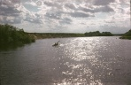
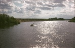

Страницы авторов "Тёмного леса"
Литературный Кисловодск и окрестности
Пишите нам! temnyjles@narod.ru
| N1 | 6.5K | 2 Jan 2016 | TL69.shtml |
| N2 | 7.0K | 2 Jan 2016 | TL70a.shtml |
| N3 | 5.9K | 2 Jan 2016 | TL70b.shtml |
| N4 | 14K | 2 Jan 2016 | TL70c.shtml |
| N5 | 11K | 2 Jan 2016 | TL70d.shtml |
| N6 | 8.8K | 2 Jan 2016 | TL71.shtml |
| N7 | 5.8K | 2 Jan 2016 | TL72a.shtml |
| N8 | 12K | 2 Jan 2016 | TL72b.shtml |
| N9 | 9.3K | 2 Jan 2016 | TL72c.shtml |
| N10 | 12K | 2 Jan 2016 | TL73a.shtml |
| N11 | 6.9K | 2 Jan 2016 | TL73b.shtml |
| N12 | 12K | 2 Jan 2016 | TL74a.shtml |
| N13 | 4.8K | 2 Jan 2016 | TL74b.shtml |
| N34 | 22K | 2 Jan 2016 | TL90.shtml |
| N35 | 30K | 2 Jan 2016 | TL91.shtml |
| N36 | 19K | 2 Jan 2016 | TL92.shtml |
| N37 | 12K | 2 Jan 2016 | TL93.shtml |
| N38 | 12K | 2 Jan 2016 | TL94.shtml |
| N39 | 7.3K | 2 Jan 2016 | TL95.shtml |
| N40 | 15K | 2 Jan 2016 | TL96.shtml |
| N41 | 22K | 2 Jan 2016 | TL97.shtml |
| N42 | 15K | 2 Jan 2016 | TL98.shtml |
| N43 | 32K | 2 Jan 2016 | TL99.shtml |
| N44 | 14K | 2 Jan 2016 | TL00.shtml |
| N45 | 14K | 2 Jan 2016 | TL01.shtml |
| N46 | 20K | 2 Jan 2016 | TL02.shtml |
| N47 | 32K | 2 Jan 2016 | TL03.shtml |
| N48 | 19K | 2 Jan 2016 | TL04.shtml |
| N49 | 43K | 2 Jan 2016 | TL05.shtml |
| N50 | 52K | 2 Jan 2016 | TL06.shtml |
| N51 | 30K | 2 Jan 2016 | TL07.shtml |
| N52 | 44K | 2 Jan 2016 | TL08.shtml |
| N53 | 17K | 2 Jan 2016 | TL09.shtml |
| N54 | 36K | 2 Jan 2016 | TL10.shtml |
| N55 | 32K | 2 Jan 2016 | TL11.shtml |
| N56 | 30K | 2 Jan 2016 | TL12.shtml |
| N57 | 26K | 2 Jan 2016 | TL13.shtml |
| N58 | 24K | 2 Jan 2016 | TL15.shtml |
| Евгений Кенеман. Необоснованность (сборник стихов) | 130K | 21 Feb 2016 | neobosno.shtml |
| Евгений Кенеман. Иммунитет (пьеса в восьми картинах с прологом и эпилогом) | 62K | 21 Feb 2016 | piessa.shtml |
| Евгений Кенеман. Нелинейный экстраполятор (рассказ) | 22K | 21 Feb 2016 | Ken.shtml |
| Рисунки Евгения Кенемана (14 шт.) | 1.8K | 21 Feb 2016 | Keneman1.shtml |
| Стихи школьных лет | 94K | 21 Feb 2016 | st-8-10.shtml |
| Лафанские стихи и проза | 54K | 21 Feb 2016 | st-lafan.shtml |
| Стихи студенческих лет | 63K | 21 Feb 2016 | st-inst.shtml |
| Стихи уральских лет | 78K | 21 Feb 2016 | st-ural.shtml |
| Стихи послеуральских лет | 49K | 21 Feb 2016 | st-p-ur.shtml |
| Случайные строки | 40K | 21 Feb 2016 | sluch.shtml |
| XXI век | 27K | 21 Feb 2016 | st-XXI.shtml |
| Избранное (составитель Ольга Таллер) | 194K | 21 Feb 2016 | Nasim1.shtml |
| Звонок (поэма 1969 г.) | 10K | 21 Feb 2016 | zvonok.shtml |
| К. Макушинский. Три книги приключений козлика Матолэка (перевод с польского Ю.Насимовича) | 44K | 21 Feb 2016 | st-Matol.shtml |
| Стихи о грибах | 35K | 21 Feb 2016 | gribi-kn.shtml |
| Стихи о деревьях | 12K | 21 Feb 2016 | rasr-kr.shtml |
| Стихи о кустах | 8.0K | 21 Feb 2016 | rasr-kr1.shtml |
| Стихи о травах | 23K | 21 Feb 2016 | rasr-kr2.shtml |
| Азбука | 31K | 21 Feb 2016 | azb-poln.shtml |
| Юрий Насимович. Звёздные системы | 613K | 21 Feb 2016 | galaktik.shtml |
| Юрий Насимович. Звезды | 399K | 21 Feb 2016 | zvezdi.shtml |
| Юрий Насимович. Солнечная система | 634K | 21 Feb 2016 | planets.shtml |
| Юрий Насимович. Происхождение и эволюция человека | 439K | 21 Feb 2016 | antropol.shtml |
| Юрий Насимович. Биокосмогоническая гипотеза | 351K | 28 Mar 2016 | biokosm.shtml |
| Юрий Насимович. Биокосмогоническая гипотеза (обновленная версия книги) | 387K | 21 Feb 2016 | biokosm2.shtml |
| Юрий Насимович. Фалес из города Милета | 7.8K | 21 Feb 2016 | Fales.shtml |
| Юрий Насимович. Изгнанный на несколько тысячелетий (об Анаксагоре) | 14K | 21 Feb 2016 | Anaksag.shtml |
| Юрий Насимович. Был ли Лукреций эволюционистом? | 37K | 21 Feb 2016 | Lukrec.shtml |
| Юрий Насимович. Конспект-рецензия книги Фрейда "Введение в психоанализ" | 156K | 21 Feb 2016 | Freud.shtml |
| Юрий Насимович. "Жизнь после жизни" Р.Моуди | 117K | 21 Feb 2016 | Moudi.shtml |
| Юрий Насимович. Конспект-рецензия книги Бориса Диденко "Цивилизация каннибалов" | 39K | 21 Feb 2016 | Didenko.shtml |
| Появление и развитие жизни на Земле | 43K | 26 May 2016 | d3-01.shtml |
| Человеческое общество | 39K | 26 May 2016 | d3-02.shtml |
| Психология, эстетика | 33K | 26 May 2016 | d3-03.shtml |
| Этика | 13K | 26 May 2016 | d3-04.shtml |
| Иерархическая модель Вселенной и мистика | 16K | 26 May 2016 | d3-05.shtml |
| Необъяснённые явления психики | 4.5K | 26 May 2016 | d3-06.shtml |
| Полтергейст | 7.0K | 26 May 2016 | d3-07.shtml |
| Миф о Туринской плащанице | 4.9K | 26 May 2016 | d3-08.shtml |
| Астрология | 7.0K | 26 May 2016 | d3-09.shtml |
| Жизнь и смерть | 68K | 26 May 2016 | d3-10.shtml |
| Проблема инопланетян | 4.8K | 26 May 2016 | d3-11.shtml |
| М.Ефимов, Ю.Насимович, Б.Шкурский. Природа Южного округа Москвы | 136K | 21 Feb 2016 | Ug-okrug.shtml |
| Ю.Насимович. Главы для путеводителя "По природным паркам и заказникам Москвы" | 154K | 21 Feb 2016 | putevod.shtml |
| Ю.Насимович. Академический район Москвы | 82K | 21 Feb 2016 | Ak-rajon.shtml |
| Ю.Насимович. Материалы для экскурсионной работы в Молжаниновском районе (окрестности Бурцева) | 205K | 21 Feb 2016 | Burcevo.shtml |
| Ю.Насимович. Природа Таганского района Москвы | 67K | 21 Feb 2016 | Taganka.shtml |
| Ю.Насимович, Б.Шкурский. Статьи о природе Коломенского в Москве | 51K | 21 Feb 2016 | Kolomens.shtml |
| Ю.Насимович. Природа Лефортова | 42K | 21 Feb 2016 | Lefortov.shtml |
| Ю.Насимович. Природа Солнцева и его окрестностей | 40K | 21 Feb 2016 | Solncevo.shtml |
| Ю.Насимович. Очерк природы Кускова в Москве | 34K | 21 Feb 2016 | Kuskovo.shtml |
| Ю.Насимович. Очерк природы Алтуфьева в Москве | 29K | 21 Feb 2016 | Altufevo.shtml |
| Ю.Насимович. Очерк природы Загорья в Москве | 21K | 21 Feb 2016 | Zagorie.shtml |
| Природа в окрестностях Николиной Горы | 73K | 21 Feb 2016 | Nik-Gora.shtml |
| Природа в окрестностях Ильинского и Усова | 32K | 21 Feb 2016 | Usovo-Il.shtml |
| Природа окрестностей Архангельского | 33K | 21 Feb 2016 | Arhangel.shtml |
| Природа окрестностей Середникова | 63K | 21 Feb 2016 | Serednik.shtml |
| Природа в окрестностях Акатова, Мешкова и Валуева | 31K | 21 Feb 2016 | Valuevo.shtml |
| Фотографии Мозжинских гор (33 шт.) | 4.1K | 21 Feb 2016 | Moz.shtml |
| Введение | 6.5K | 21 Feb 2016 | reki0.shtml |
| 1.1. Реки, ручьи, овраги... | 6.6K | 21 Feb 2016 | reki1-01.shtml |
| 1.2. Родники | 3.5K | 21 Feb 2016 | reki1-02.shtml |
| 1.3. Озёра, пруды, водохранилища... | 7.5K | 21 Feb 2016 | reki1-03.shtml |
| 1.4. Болота | 8.8K | 21 Feb 2016 | reki1-04.shtml |
| 1.5. Геологические обнажения вдоль рек | 8.1K | 21 Feb 2016 | reki1-05.shtml |
| 1.6. Приречные деревья и кустарники | 6.4K | 21 Feb 2016 | reki1-06.shtml |
| 1.7. Водоплавающие и околоводные птицы | 6.6K | 21 Feb 2016 | reki1-07.shtml |
| 1.8. Рыбы | 5.0K | 21 Feb 2016 | reki1-08.shtml |
| 1.9. Археологические памятники вдоль рек | 6.2K | 21 Feb 2016 | reki1-09.shtml |
| 1.10. Как изучались малые реки Москвы | 5.8K | 21 Feb 2016 | reki1-10.shtml |
| 2.1. Несколько слов о реке Москве | 6.7K | 21 Feb 2016 | reki2-01.shtml |
| 2.2. Сохранилась ли речка Филька? | 8.1K | 21 Feb 2016 | reki2-02.shtml |
| 2.3. Алешинка, Натошенка, Кипятка... | 6.9K | 21 Feb 2016 | reki2-03.shtml |
| 2.4. Раменки без рамени | 8.1K | 21 Feb 2016 | reki2-04.shtml |
| 2.5. Прощание с Чурой? | 7.4K | 21 Feb 2016 | reki2-05.shtml |
| 2.6. Нужна ли городу речка Жужа? | 7.9K | 21 Feb 2016 | reki2-06.shtml |
| 2.7. Почему Кремль не построили в Тушине? | 7.1K | 21 Feb 2016 | reki2-07.shtml |
| 2.8. Шире, чем река Москва | 7.6K | 21 Feb 2016 | reki2-08.shtml |
| 2.9. Две Неглинки - натуральная и водопроводная | 7.0K | 21 Feb 2016 | reki2-09.shtml |
| 2.10. Речка Лихого бора | 8.3K | 21 Feb 2016 | reki2-10.shtml |
| 2.11. Дочка Лосиного Острова | 6.8K | 21 Feb 2016 | reki2-11.shtml |
| 2.12. Речка с улицы Вешних вод | 6.1K | 21 Feb 2016 | reki2-12.shtml |
| 2.13. Серебристая ленточка Измайлова | 7.2K | 21 Feb 2016 | reki2-13.shtml |
| 3.1. Сокращения названий литературных и картографических источников | 4.1K | 21 Feb 2016 | reki3-01.shtml |
| 3.2 Прочие сокращения | 2.5K | 21 Feb 2016 | reki3-02.shtml |
| 3.3. Река Москва и отдельные участки её водной поверхности | 49K | 21 Feb 2016 | reki3-03.shtml |
| 3.19. Бассейн Пахры в Толстопальцеве и Внукове (притоки Незнайки) | 8.8K | 21 Feb 2016 | reki3-19.shtml |
| 3.20. Бассейн Пахры на юге Москвы (кроме бассейна Битцы) (в основном, Южное Бутово) | 45K | 21 Feb 2016 | reki3-20.shtml |
| 3.21. Бассейн Битцы (в т.ч. Сев. Бутово) | 59K | 21 Feb 2016 | reki3-21.shtml |
| 3.22. Бассейн левых притоков р.Москвы в Митине | 15K | 21 Feb 2016 | reki3-22.shtml |
| 3.23. Река Сходня | 20K | 21 Feb 2016 | reki3-23.shtml |
| 3.24. Бассейн Сходни в Зеленограде (кроме бассейна Горетовки) | 47K | 21 Feb 2016 | reki3-24.shtml |
| 3.25. Бассейн Горетовки в Зеленограде | 38K | 21 Feb 2016 | reki3-25.shtml |
| 3.26. Бассейн Сходни в Северном и Северо-Западном округах | 30K | 21 Feb 2016 | reki3-26.shtml |
| 3.27. Бассейн Химки (в т.ч. Химкинское водохранилище) | 25K | 21 Feb 2016 | reki3-27.shtml |
| 3.28. Бассейны левых притоков р.Москвы, впадающих на участке от устья Химки до устья Ходынки | 14K | 21 Feb 2016 | reki3-28.shtml |
| 3.29. Бассейн Ходынки | 6.9K | 21 Feb 2016 | reki3-29.shtml |
| 3.30. Бассейн Ермаковского ручья и Студенца | 8.6K | 21 Feb 2016 | reki3-30.shtml |
| 3.31. Бассейн Пресни | 14K | 21 Feb 2016 | reki3-31.shtml |
| 3.32. Бассейны левых притоков р.Москвы, впадающих на участке от устья Пресни до устья Неглинной (Черторый и др.) | 11K | 21 Feb 2016 | reki3-32.shtml |
| 3.33. Бассейны Неглинной, Сорочки и Рачки | 22K | 21 Feb 2016 | reki3-33.shtml |
| 3.34. Река Яуза | 14K | 21 Feb 2016 | reki3-34.shtml |
| 3.35. Бассейны правых притоков Яузы, впадающих на участке от МКАД до устья Лихоборки (в т.ч. Чермянка) | 28K | 21 Feb 2016 | reki3-35.shtml |
| 3.36. Бассейн Лихоборки | 50K | 21 Feb 2016 | reki3-36.shtml |
| 3.37. Бассейны правых притоков Яузы, впадающих ниже устья Лихоборки (в т.ч. ручьи Сокольников) | 38K | 21 Feb 2016 | reki3-37.shtml |
| 3.38. Бассейны левых притоков Яузы, впадающих на участке от МКАД до устья Хапиловки (в т.ч. Ичка и Будайка в Лосином Острове) | 37K | 21 Feb 2016 | reki3-38.shtml |
| 3.39. Бассейн Сосенки и Хапиловки (кроме бассейна Серебрянки) | 11K | 21 Feb 2016 | reki3-39.shtml |
| 3.40. Бассейн Серебрянки (Измайлово и окрестности) | 41K | 21 Feb 2016 | reki3-40.shtml |
| 3.41. Бассейны левых притоков Яузы, впадающих ниже устья Хапиловки (в т.ч. Синичка, Лефортовские пруды, Золотой Рожок) | 13K | 21 Feb 2016 | reki3-41.shtml |
| 3.42. Бассейны левых притоков р.Москвы, впадающих на участке от устья Яузы до устья Нищенки | 11K | 21 Feb 2016 | reki3-42.shtml |
| 3.43. Бассейн Нищенки (кроме бассейна Пономарки) | 16K | 21 Feb 2016 | reki3-43.shtml |
| 3.44. Бассейн Пономарки (в т.ч. Косинские озёра) | 55K | 21 Feb 2016 | reki3-44.shtml |
| 3.45. Бассейны левых притоков р.Москвы, впадающих на участке от устья Нищенки до устья Пехорки | 30K | 21 Feb 2016 | reki3-45.shtml |
| 3.46. Московская часть бассейна Пехорки (Рудневка и др.) | 19K | 21 Feb 2016 | reki3-46.shtml |
| 3.47. Московская часть бассейна Клязьмы | 28K | 21 Feb 2016 | reki3-47.shtml |
| Часть 4. Обобщающие материалы по водным объектам города | 26K | 21 Feb 2016 | reki4.shtml |
| Литература | 28K | 21 Feb 2016 | reki-lit.shtml |
| Стихи | 347K | 14 Jun 2016 | Taller.shtml |
| Избранные стихи | 127K | 21 Feb 2016 | izbranoe.shtml |
| фотографии и рисунки (8 шт.) | 1.5K | 21 Feb 2016 | risunki.shtml |
| Акварели - 1 (17 шт.) | 3.1K | 21 Feb 2016 | akwareli.shtml |
| Акварели - 2 (20 шт.) | 3.3K | 21 Feb 2016 | akvareli.shtml |
| Дом на озере | 21K | 21 Feb 2016 | domnaoz.shtml |
| Мозаика 2011 | 9.5K | 21 Feb 2016 | mozaika.shtml |
| Облики-состояния | 4.9K | 1 Apr 2016 | obliki.shtml |
| Архит | 5.5K | 1 Apr 2016 | arhit.shtml |
| Глория | 26K | 21 Feb 2016 | Gloria.shtml |
| Сказка про овечек | 25K | 21 Feb 2016 | ovcy.shtml |
| Девочка Аня и волк Вова | 94K | 21 Feb 2016 | Vova.shtml |
| Исторический роман | 104K | 21 Feb 2016 | roman.shtml |
| рассказы о Ленине | 7.9K | 21 Feb 2016 | Lenin.shtml |
| Почечуев | 22K | 21 Feb 2016 | Pochechu.shtml |
| Введение в курс | 17K | 21 Feb 2016 | Marks.shtml |
| Легенда о сокращении штатов | 7.9K | 21 Feb 2016 | drevn.shtml |
| С передних рубежей науки | 12K | 21 Feb 2016 | nauka.shtml |
| Измышления | 1.8K | 21 Feb 2016 | ritori.shtml |
| "Не верь, не бойся, не проси" | 9.8K | 21 Feb 2016 | never.shtml |
| Высшая справедливость | 10K | 21 Feb 2016 | Prostokv.shtml |
| Эскадо | 34K | 21 Feb 2016 | Eskado.shtml |
| Грибы | 1.5K | 21 Feb 2016 | griby.shtml |
| Этика и этология (симлогия) | 404K | 21 Feb 2016 | homo.shtml |
| Чарльз Дарвин и его учение | 27K | 21 Feb 2016 | Darwin.shtml |
| Учение Николая Фёдорова в XXI веке | 14K | 21 Feb 2016 | Fedorov.shtml |
| Акоп Назаретян | 17K | 25 Mar 2016 | Naz0.shtml |
| Философия истории Акопа Назаретяна | 12K | 25 Mar 2016 | Naz.shtml |
| Философия Назаретяна - ключ к прошедшему и будущему | 17K | 25 Mar 2016 | Naz1.shtml |
| Биокосмогоническая гипотеза Юрия Насимовича | 16K | 21 Feb 2016 | biokos.shtml |
| Очерки будущего | 31K | 21 Feb 2016 | futur.shtml |
| Рубайат | 55K | 14 Jun 2016 | rub.shtml |
| Стихи | 40K | 21 Feb 2016 | stihi.shtml |
| Красный октябрь (историческая трагикомедия) | 33K | 21 Feb 2016 | KO.shtml |
| Сказка о шести братьях | 12K | 21 Feb 2016 | skazka.shtml |
| К вопросу о чистоте русского языка | 14K | 21 Feb 2016 | rusjaz.shtml |
| Всемирные конгрессы эсперанто | 17K | 21 Feb 2016 | esper.shtml |
| Олег Георгиевич Соловьев (некролог) | 3.4K | 21 Feb 2016 | Oleg0.shtml |
| Связности, конформные структуры и уравнение Эйнштейна | 68K | 21 Feb 2016 | SKGUE.shtml |
| Категорные аспекты теории Галуа | 3.5K | 21 Feb 2016 | Galua.shtml |
| Тексты песен | 43K | 21 Feb 2016 | pesni.shtml |
| Другие стихи | 25K | 21 Feb 2016 | drstih.shtml |
| Притча на краю света | 45K | 21 Feb 2016 | pritcha.shtml |
| Песни (39 аудиозаписей в формате mp3) | 2.7K | 25 Mar 2016 | MP3.shtml |
| Проза (6 книг в формате pdf) | 1.0K | 21 Feb 2016 | PDF.shtml |
| Судьба Николая Второго | 21K | 25 Mar 2016 | Nikolaj.shtml |
| "Медный всадник" А.Пушкина | 39K | 25 Mar 2016 | vsadnik.shtml |
| Наша беда | 15K | 25 Mar 2016 | beda.shtml |
| "Фамильный альбом" Татьяны Назаренко | 7.4K | 25 Mar 2016 | Nazarenk.shtml |
| "Жди меня" | 6.1K | 25 Mar 2016 | Simonov.shtml |
| Мой мастер класс | 9.2K | 25 Mar 2016 | klass.shtml |
| Стихи Марии Андреевны Чегодаевой | 47K | 21 Feb 2016 | Chegod.shtml |
| Песни Михаила Чегодаева (20 аудиозаписей в формате mp3) | 2.0K | 21 Feb 2016 | Cheg.shtml |
| Стихи Михаила Чегодаева | 4.6K | 21 Feb 2016 | Cheg-Mih.shtml |
| Стихи Алексея Меллера | 96K | 21 Feb 2016 | Mel-izb.shtml |
| Александр Богданов. В ожидании дня (сборник стихов) | 76K | 21 Feb 2016 | Bogd-izb.shtml |
| Александр Богданов. Подходите к моему костру (сборник стихов) | 91K | 21 Feb 2016 | kostru.shtml |
| Стихи Ольги Городецкой | 6.7K | 21 Feb 2016 | Blinova.shtml |
| Стихи Анатолия Переслегина | 17K | 21 Feb 2016 | Peresl.shtml |
| Стихи Ксении Всеволодовны Авиловой | 32K | 21 Feb 2016 | Avil-izb.shtml |
| Стихи Александра Косарева | 175K | 21 Feb 2016 | Kos-izb.shtml |
| Рассказы Александра Косарева | 17K | 21 Feb 2016 | AKos-ras.shtml |
| Полоска утреннего света (сборник стихов и рассказов) | 53K | 21 Feb 2016 | poloska.shtml |
| Татьянин день (сборник стихов и рассказов) | 98K | 1 Apr 2016 | tatden.shtml |
| Из жизни ЛИТО "Дождь" (повесть) | 51K | 21 Feb 2016 | lito.shtml |
| Петроградская сторона (сборник стихов) | 24K | 21 Feb 2016 | petrst.shtml |
| Александр Косарев (поэма) | 4.3K | 21 Feb 2016 | Tem.shtml |
| Вечер творчества Александра Косарева (репортаж) | 5.7K | 21 Feb 2016 | Kos.shtml |
| Памяти Надежды Рыжковой (очерк) | 10K | 4 Apr 2016 | Ryzkova0.shtml |
| Блиц-стихи | 42K | 21 Feb 2016 | blic.shtml |
| Восьмистишия лафанцев | 30K | 21 Feb 2016 | vosm.shtml |
| Книга лимериков (перевод с английского А.Меллера и Ю.Насимовича) | 59K | 21 Feb 2016 | limerik.shtml |
| Программа "Русский романс" (поет Андрей Лаврешников) (15 аудиозаписей в формате mp3) | 2.2K | 29 Feb 2016 | romansy.shtml |
| Программа "КОГДА ЗАЖГУТСЯ ФОНАРИ" (поет Андрей Лаврешников) (12 аудиозаписей в формате mp3) | 1.7K | 29 Feb 2016 | fonari.shtml |
| Стихи Аллы Энтиной | 6.6K | 15 Mar 2016 | Entina.shtml |
| Стихи Марианны Цукерник - Ван дер Веен | 15K | 15 Mar 2016 | Cukernik.shtml |
| В.Н. Соколов. Талант и поклонники (статья в "Московской Правде" об А.Лаврешникове) | 2.5K | 29 Feb 2016 | article.shtml |
| Памяти Марины Андреевны Иониной | 3.5K | 29 Feb 2016 | Ionina.shtml |
| Творчество А.В. Неждановой в звукозаписи | 17K | 29 Feb 2016 | Nezhdan.shtml |
| К 120-летию со дня рождения народной артистки СССР Елены Андреевны Степановой | 4.5K | 29 Feb 2016 | Step.shtml |
| Амелита Галли-Курчи | 7.2K | 29 Feb 2016 | Galli.shtml |
| Камерная певица Вера Иосифовна Духовская | 7.2K | 29 Feb 2016 | Duhovska.shtml |
| Елена Шумилова, солистка Большого театра | 7.1K | 29 Feb 2016 | Shumil.shtml |
| фрагмент из книги Виктории "Кристина. Преодоление боли" | 2.7K | 29 Feb 2016 | Kristina.shtml |
| Библионочь в Кисловодске (статьи о вечере 19 апреля 2013) | 5.4K | 29 Feb 2016 | bibnoch.shtml |
| Елизавета Черепахина. Оазис красоты и очарования (о театре им. Н.С. Гумилёва) | 3.7K | 29 Feb 2016 | Gumilew.shtml |
| Андрей КЛЕНИН, Анастасия САПОНОВА. Пять вечеров | 4.3K | 29 Feb 2016 | 5vecerov.shtml |
| Екатерина Копосова. Сотворчество ума и вдохновенья | 5.3K | 29 Feb 2016 | statja.shtml |
| Дарья Романова. Село Хатунь | 14K | 18 Mar 2016 | Hatun1.shtml |
| Фотографии Хатуни и окрестностей | 4.7K | 18 Mar 2016 | foto.shtml |
| Главная опись церковному и ризничному имуществу Серпуховского уезда Воскресенской села Хатунь церкви (1857г.) | 56K | 18 Mar 2016 | opiscerk.shtml |
| В.Н. Каленов. История Хатунской волости Серпуховского уезда | 537K | 4 Apr 2016 | Kalenov.shtml |
| Иллюстрации к книге В.Н. Каленова "История Хатунской волости" | 5.3K | 18 Mar 2016 | imag.shtml |
| Годы возникновения российских городов (Приложение 1 к книге В.Н. Каленова) | 3.1K | 18 Mar 2016 | Kalenov1.shtml |
| Некоторые даты нашей истории (Приложение 2 к книге В.Н. Каленова) | 5.2K | 18 Mar 2016 | Kalenov2.shtml |
| Патриархи России (Приложение 3 к книге В.Н. Каленова) | 1.2K | 18 Mar 2016 | Kalenov3.shtml |
| о В.Н. Каленове | 1.4K | 18 Mar 2016 | Kalenov0.shtml |
| Фотографии Звенигорода (31 шт.) | 5.4K | 2 Jun 2016 | Zvenig.shtml |
| Фотографии Иславского (7 шт.) | 2.2K | 1 May 2016 | Islav.shtml |
| Фотографии Ступинского района (85 шт.) | 15K | 14 Jun 2016 | Stup.shtml |
| подмосковные болота (65 фотографий) | 7.5K | 30 May 2016 | bolota.shtml |
| Литературное Подмосковье (126 фотографий) | 55K | 2 Jun 2016 | litpodm.shtml |
| Научная автобиография Акопа Назаретяна | 19K | 29 Feb 2016 | avtobio.shtml |
| Интеллект во Вселенной | 603K | 29 Feb 2016 | vselen.shtml |
| Цивилизационные кризисы в контексте Универсальной истории | 824K | 29 Feb 2016 | krizisy.shtml |
| Антропология насилия и культура самоорганизации | 705K | 29 Feb 2016 | nasilie.shtml |
| История и психология антропогенных кризисов: гипотеза техно-гуманитарного баланса | 66K | 29 Feb 2016 | kriz.shtml |
| Нелинейное будущее (Мегаисторические, синергетические и культурно-психологические предпосылки глобального прогнозирования) | 1.0M | 6 Apr 2016 | futur.shtml |
| Единое и расчлененное знание в истории культуры (фрагмент из готовящегося к выходу коллективного учебника для аспирантов по истории и методологии науки) | 133K | 29 Feb 2016 | znanie.shtml |
| Психология стихийного массового поведения: толпа, слухи, избирательные и рекламные кампании | 358K | 29 Feb 2016 | tolpa.shtml |
| А.Рехдер. Материалы о Тополях (фрагмент книги "Руководство по культивируемым деревьям и кустарникам, приспособленным к условиям Северной Америки, исключая субтропические и жаркие регионы". Перевод Д.Медведевой) | 58K | 29 Feb 2016 | Rehder.shtml |
| Д.Медведева. Киево-Печёрская лавра | 5.6K | 29 Feb 2016 | Kiev.shtml |
| Д.Медведева. Путешествие по югу России (на английском языке) | 31K | 27 Mar 2016 | south.shtml |
| Д.Медведева. Путешествие по Украине (на английском языке) | 24K | 27 Mar 2016 | Ukraine.shtml |
| Д.Медведева. Музей Н.К. Рериха (на английском языке) | 8.5K | 27 Mar 2016 | Roerich.shtml |
| Д.Медведева. Путешествие на Соловки (на английском языке) | 55K | 27 Mar 2016 | Solovki.shtml |
| Барышня и иммигрант | 88K | 29 Feb 2016 | baryshna.shtml |
| Барышня и иммигрант (киносценарий) | 169K | 29 Feb 2016 | bariim.shtml |
| Молчаливая Жанна | 135K | 29 Feb 2016 | Zhanna.shtml |
| Смерть наступила.... | 43K | 25 Mar 2016 | smert.shtml |
| В синюшном Переделе | 180K | 29 Feb 2016 | Peredel.shtml |
| Мой друг, бомж | 109K | 29 Feb 2016 | bomzh.shtml |
| Сон в летнюю ночь об Одессе | 79K | 29 Feb 2016 | Odessa.shtml |
| Охота на любимого оленя | 74K | 29 Feb 2016 | olen.shtml |
| Манон, по прозвищу "Кроха-дансюз" | 90K | 29 Feb 2016 | Manon.shtml |
| Пятна тишины (сборник стихов, подготовлен Мариной Федак) | 46K | 29 Feb 2016 | silence.shtml |
| подборка стихов | 14K | 29 Feb 2016 | mame.shtml |
| подборка стихов | 19K | 29 Feb 2016 | Toronto.shtml |
| подборка стихов | 7.9K | 29 Feb 2016 | stixi.shtml |
| Акафист всему живому на земле | 6.1K | 29 Feb 2016 | akafist.shtml |
| Надежда Рыжкова. Стихотворения | 61K | 29 Feb 2016 | Ryzhkova.shtml |
| Надежда Рыжкова. Принцесса Мален (пьеса) | 41K | 29 Feb 2016 | Malen.shtml |
| Поет Татьяна Рубанская (44 аудиозаписи в формате mp3) | 3.8K | 28 Mar 2016 | Tania.shtml |
| Природа Подольского края (ред. Д.М. Очагов, В.Н. Коротков) | 747K | 25 Mar 2016 | Podolsk.shtml |
| Аделия Мусина. Лес и человек. | 4.9K | 29 Feb 2016 | Musina.shtml |
| Мая Асанова. Стихи | 8.7K | 29 Feb 2016 | Asanova.shtml |
| Александр Габов. Стихи | 5.7K | 29 Feb 2016 | Gabov.shtml |
| Геннадий Гузенко. Стихи | 9.9K | 29 Feb 2016 | Guzenko.shtml |
| Надежда Сухинова. Стихи | 9.3K | 29 Feb 2016 | Suhinova.shtml |
| Игорь Тарасенко. Бабочка и Будда (рассказ) | 6.5K | 29 Feb 2016 | babochka.shtml |
| Илья Криштул. Стихи | 2.0K | 29 Feb 2016 | Krishtul.shtml |
| стихи Ирины Маниной | 39K | 29 Feb 2016 | Manina.shtml |
| стихи Екатерины Каргопольцевой | 32K | 29 Feb 2016 | Kar.shtml |
| стихи Сергея Уткина | 29K | 29 Feb 2016 | Utkin.shtml |
| прозаические миниатюры Сергея Уткина | 138K | 29 Feb 2016 | miniatur.shtml |
| стихи Евгении Зарубиной | 6.5K | 29 Feb 2016 | Zarubina.shtml |
| стихи Марии Краевой | 7.8K | 29 Feb 2016 | Kraeva.shtml |
| стихи Екатерины Щенниковой | 5.9K | 29 Feb 2016 | Schen.shtml |
| стихи Максима Дарбашкеева | 3.7K | 29 Feb 2016 | Darb.shtml |
| стихи Сергея Белого | 9.9K | 28 Mar 2016 | Belyj.shtml |
| стихи Виталии Власовой | 3.1K | 29 Feb 2016 | Vlasova.shtml |
| стихи Юлии Лысовой | 5.3K | 29 Feb 2016 | Lysova.shtml |
| Стихи | 7.4K | 29 Feb 2016 | podborka.shtml |
| Рушник (рассказ) | 17K | 29 Feb 2016 | rushnik.shtml |
| Последний звонок (рассказ) | 23K | 29 Feb 2016 | poslzvon.shtml |
| Город Медем (статья об Арсении Тарковском) | 10K | 29 Feb 2016 | Medem.shtml |
| Фотоальбом "Облик Кисловодска в прошлом" (64 фотографии и рисунка) | 17K | 15 Mar 2016 | albom.shtml |
| Страница журнала "Литературный Кисловодск" | 48K | 31 May 2016 | litkis.shtml |
| Светлана Цыбина. Колокольное слово (стихотворения) | 67K | 15 Mar 2016 | Cybina.shtml |
| Стихи Юлии Чугай | 57K | 15 Mar 2016 | Chugaj.shtml |
| Александра Полянская. Стихи | 48K | 15 Mar 2016 | Polanska.shtml |
| Екатерина Копосова. Стихи | 31K | 15 Mar 2016 | Koposova.shtml |
| Танзиля Боташева. Стихи | 4.3K | 15 Mar 2016 | Botaseva.shtml |
| Елена Гончарова. Стихи | 15K | 31 Jul 2016 | Gonch.shtml |
| Иван Аксёнов. Следы (поэма) | 9.2K | 31 May 2016 | sledy.shtml |
| Тамара Янишевская. Грузинская баллада | 5.1K | 15 Mar 2016 | ballada.shtml |
| Рассказы Елены Довжиковой | 31K | 29 Jun 2016 | Dovzhik.shtml |
| Лариса Корсуненко. Ненужные вещи | 6.2K | 29 Jun 2016 | Korsun.shtml |
| Виктор Филин. Поэма в бежевых тонах | 9.3K | 15 Mar 2016 | Filin.shtml |
| Игорь Паньков. Стихи | 6.0K | 16 Mar 2016 | Pankov.shtml |
| Другая подборка стихов Игоря Панькова | 9.6K | 16 Mar 2016 | Pankov1.shtml |
| Подборка стихов Игоря Панькова (составлена Сергеем Смайлиевым) | 13K | 16 Mar 2016 | Pankow.shtml |
| Вячеслав Яновский, Екатерина Копосова. Памяти Игоря Панькова | 4.2K | 16 Mar 2016 | Pankov0.shtml |
| Свободные стихи | 8.2K | 16 Mar 2016 | Smailiev.shtml |
| Знак Стрельца (сборник стихов) | 36K | 16 Mar 2016 | znak.shtml |
| Стихи, опубликованные в "Литературном Кисловодске" | 2.6K | 16 Mar 2016 | LK.shtml |
| Фотографии (122 шт.) | 15K | 16 Mar 2016 | Sm-foto.shtml |
| Памяти Игоря Панькова | 12K | 16 Mar 2016 | Sm-Pan.shtml |
| Третья Жизнь (сборник стихов) | 25K | 15 Mar 2016 | Gadelia1.shtml |
| Знак Земли (сборник стихов) | 75K | 15 Mar 2016 | Gadelia2.shtml |
| Стихи (опубликованные в "Литературном Кисловодске") | 27K | 15 Mar 2016 | Gadelia3.shtml |
| Геннадий Трофимов. Стихи | 36K | 17 Mar 2016 | Trofimov.shtml |
| Геннадий Трофимов. Письмо в редакцию "ЛК" | 4.4K | 17 Mar 2016 | Trofimow.shtml |
| Геннадий Трофимов. От восхода до заката (сборник стихов, прозы и воспоминаний) | 126K | 17 Mar 2016 | voshod.shtml |
| Остановиться, оглянуться... (стихи 2002-2010 годов) | 41K | 17 Mar 2016 | OO.shtml |
| Василий Помещиков. Они будут жить в своих стихах (статья о Г.Е. Трофимове) | 7.0K | 17 Mar 2016 | Pomesc.shtml |
| Подземная река (сборник стихов) | 163K | 17 Mar 2016 | podzem.shtml |
| Азъ есмь | 45K | 17 Mar 2016 | az.shtml |
| Дождь | 89K | 17 Mar 2016 | dojd.shtml |
| Старые сосны | 80K | 17 Mar 2016 | starsosn.shtml |
| 12 стихов | 8.3K | 17 Mar 2016 | 12stihov.shtml |
| Стихи, опубликованные в "Литературном Кисловодске" | 23K | 17 Mar 2016 | SP1.shtml |
| Из стихов 1990 г. | 20K | 17 Mar 2016 | SP90.shtml |
| Из стихов 2001-2002 гг. | 44K | 17 Mar 2016 | SP01-02.shtml |
| Свободные стихи | 18K | 17 Mar 2016 | SP.shtml |
| Ледяная весна свободы (статья и стихи) | 18K | 17 Mar 2016 | LVS.shtml |
| Я был очевидцем трагедии | 21K | 15 Mar 2016 | 2-6-1962.shtml |
| Requiem (стихи) | 8.2K | 15 Mar 2016 | requiem.shtml |
| Свидетель (пьеса для чтения) | 109K | 15 Mar 2016 | svidetel.shtml |
| Приложения | 142K | 29 Mar 2016 | prilozh.shtml |
| Александр Квиток. Какими мы были, какими мы стали... (статья о книге Ст. Подольского "Новочеркасск 1962") | 16K | 15 Mar 2016 | Kvitok.shtml |
| Некролог | 4.6K | 15 Mar 2016 | nekrolog.shtml |
| Н.С. Искандарян. Письмо в Фонд Солженицына (февраль 1999 г.) | 50K | 15 Mar 2016 | Norik.shtml |
| Ирина Легенко. Исповедь уходящего века. Кисловодская газета, 27 сентября 2000 г. | 18K | 15 Mar 2016 | kisgaz.shtml |
| Об авторе | 2.1K | 15 Mar 2016 | rezume.shtml |
| Два века у богатырского ключа (летопись города Кисловодска) | 286K | 15 Mar 2016 | letopis.shtml |
| Курортные города России как объект управления в конце XIX - начале XX века | 349K | 15 Mar 2016 | kurorty.shtml |
| Северный Кавказ от Адыгеи до Дагестана (фрагменты) | 113K | 15 Mar 2016 | Kavkaz.shtml |
| Северный Кавказ (Географический и историко-этнографический очерк) | 113K | 15 Mar 2016 | SK.shtml |
| Великое творение Байкова (о главном корпусе санатория "Нарзан") | 9.5K | 15 Mar 2016 | grand.shtml |
| Предки были каменщиками (об истории кисловодских семей Багдасаровых и Савадовых) | 9.5K | 15 Mar 2016 | Savadova.shtml |
| В летописи мирового авангарда (о страницах истории Кисловодска, связанных с развитием искусства авангарда) | 3.3K | 15 Mar 2016 | avangard.shtml |
| Когда солнце исчезло... (о солнечном затмении 29 марта 2006 г.) | 3.3K | 15 Mar 2016 | zatmenie.shtml |
| Швейцарский домик (о бывшем доме архитектора М. Мержанова) | 2.2K | 15 Mar 2016 | Merzanov.shtml |
| Дом бакинского доктора (о бывшем доме профессора Е. Гиндеса) | 3.3K | 15 Mar 2016 | Gindes.shtml |
| Важная веха в городском благоустройстве (об истории кисловодской канализации) | 3.7K | 15 Mar 2016 | blagoust.shtml |
| 105 лет городскому самоуправлению Кисловодска! | 3.4K | 15 Mar 2016 | 105let.shtml |
| Мяса было вдоволь, а сахар "кусался" (о зарплатах и ценах на Кавказских Минеральных Водах в начале XX века) | 4.3K | 15 Mar 2016 | ceny.shtml |
| Кисловодск стал ловушкой для графини (о роли Кисловодска в судьбе графини Аграфены Зарнекау) | 5.4K | 15 Mar 2016 | zagadki.shtml |
| Архитектура-кормилица (о важности сохранения историко-архитектурного наследия) | 9.4K | 15 Mar 2016 | arhitek.shtml |
| Перевал спасения (об эвакуации жителей поселка Нижний Баксан летом-осенью 1942 г.) | 31K | 15 Mar 2016 | pereval.shtml |
| Жале, что значит: "капельки росы" (о пребывании в Ессентуках и Кисловодске персидской поэтессы Жале Исфагани) | 11K | 15 Mar 2016 | Zhale.shtml |
| Утраченное чудо - вилла "Мавритания" | 8.3K | 15 Mar 2016 | mavritan.shtml |
| Кинолетопись Кисловодска (о художественных фильмах, которые снимались в Кисловодске) | 15K | 15 Mar 2016 | kino.shtml |
| Музыкальная школа Зак (о появлении в 1914 г. в Кисловодске первой музыкальной школы) | 4.1K | 15 Mar 2016 | Zak.shtml |
| Кисловодск 30 лет назад! (о том, что смог поведать о Кисловодске 1980-х гг. старый телефонный справочник) | 11K | 15 Mar 2016 | 30let.shtml |
| Забытое имя (об историке З.В. Удальцовой) | 2.9K | 15 Mar 2016 | Udalcova.shtml |
| Французский писатель из Кисловодска (о писателе, драматурге и переводчике Артюре Адамове) | 7.1K | 15 Mar 2016 | Adamov.shtml |
| Памятный сезон советского курорта (1923 г.) | 11K | 15 Mar 2016 | 1923god.shtml |
| Боков сбоку не бывает (о пребывании в Кисловодске поэта В.Ф. Бокова) | 9.8K | 15 Mar 2016 | Bokov.shtml |
| Стихи | 13K | 15 Mar 2016 | Yanovski.shtml |
| Воспоминания белой эмиграции как источники для изучения истории Кисловодска в годы Гражданской войны | 14K | 15 Mar 2016 | gravoina.shtml |
| Город-курорт как объект управления | 19K | 15 Mar 2016 | gorod.shtml |
| Бермамыт - великая твердыня | 8.9K | 15 Mar 2016 | Bermamyt.shtml |
| Родословные тайны профессора Яновского | 9.8K | 15 Mar 2016 | Janovs.shtml |
| Дача Мищенко и Юргелевича | 5.5K | 15 Mar 2016 | dacha.shtml |
| Кисловодск | 40K | 4 Apr 2016 | Kislovod.shtml |
| Ессентуки | 23K | 4 Apr 2016 | Esentuki.shtml |
| Архыз | 21K | 16 Mar 2016 | Arhyz.shtml |
| Бриллиант в архитектурной короне Кисловодска (о доме Е.Г.Кундури в Ребровой балке) | 9.5K | 16 Mar 2016 | Kunduri.shtml |
| Свято-Троицкая обитель в Пятигорье | 20K | 16 Mar 2016 | Homakovy.shtml |
| Архитекторы Бернардацци: Петербург - Пятигорье | 14K | 16 Mar 2016 | Bernar.shtml |
| Кисловодская жемчужина (статья о Главных нарзанных ваннах в Кисловодске и о семье архитектора А.Н. Клепинина) | 22K | 16 Mar 2016 | Klepinin.shtml |
| А.Н. Клепинин. Продолжение разговора | 15K | 16 Mar 2016 | KAN.shtml |
| Из архива старого библиографа (Воспоминания о Э.Б. Ходжаеве) | 13K | 16 Mar 2016 | Hodzaev.shtml |
| КАВКАЗ - МОСКВА - ПАРИЖ: Анри Труайя - служение двум Родинам | 31K | 16 Mar 2016 | Troyat.shtml |
| Неиссякаемый источник вдохновения | 43K | 16 Mar 2016 | Troyat2.shtml |
| Чехов в Кисловодске | 9.7K | 16 Mar 2016 | Chehov.shtml |
| Листая старый журнал (о журнале "Кавказские курорты" (1913 г.)) | 11K | 16 Mar 2016 | starzhur.shtml |
| Кисловодск и окрестности (фотоальбом) | 4.4K | 16 Mar 2016 | Tr-foto.shtml |
| Иллюстрации к статье "Бриллиант в архитектурной короне Кисловодска" | 3.7K | 16 Mar 2016 | Kund.shtml |
| Иллюстрации к статье "Архитекторы Бернардацци" | 2.1K | 16 Mar 2016 | Ber.shtml |
| Иллюстрации к статье "Кисловодская жемчужина" | 4.4K | 16 Mar 2016 | Kl.shtml |
| Иллюстрации к статье "А.Н. Клепинин. Продолжение разговора" | 2.9K | 16 Mar 2016 | KAN0.shtml |
| Иллюстрации к статье "КАВКАЗ - МОСКВА - ПАРИЖ: Анри Труайя - служение двум Родинам" | 3.3K | 16 Mar 2016 | AT.shtml |
| Кисловодск в рисунках Алексея Травкина (60 рисунков) | 53K | 30 Apr 2016 | Travkin.shtml |
| картины Алексея Травкина | 1.0K | 17 Mar 2016 | Travkin1.shtml |
| Фотографии окрестностей санатория "Эльбрус" в Кисловодске | 1.6K | 17 Mar 2016 | Travkin2.shtml |
| Собор Св. Николая Чудотворца | 5.8K | 28 Mar 2016 | sobor.shtml |
| Замок коварства и любви | 8.2K | 17 Mar 2016 | zamok.shtml |
| Боргустанские горы | 11K | 17 Mar 2016 | Borg.shtml |
| Лечебница Хлудовой и городская больница | 9.1K | 4 Apr 2016 | bolnica.shtml |
| Кисловодский нарзанный завод | 4.9K | 28 Mar 2016 | rozliv.shtml |
| Евгений Бригиневич. Фотографии Кисловодска | 4.0K | 17 Mar 2016 | Brig.shtml |
| Asha Chokerbali. Кисловодский парк | 4.7K | 17 Mar 2016 | Asha.shtml |
| О.Г. Соловьёв. Воспоминания | 29K | 15 Mar 2016 | Oleg.shtml |
| Стихи | 3.0K | 2 May 2016 | S.shtml |
| Проза | 1.7K | 22 Jun 2016 | P.shtml |
| Драматургия | 2.1K | 2 May 2016 | D.shtml |
| История, география, краеведение | 1.6K | 2 May 2016 | K.shtml |
| Естествознание и философия | 1.1K | 2 May 2016 | E.shtml |
| Песни и романсы | 1.1K | 2 May 2016 | M.shtml |
| Фотографии, рисунки | 3.5K | 2 May 2016 | F.shtml |
| Ссылки | 3.5K | 2 May 2016 | links.shtml |
| Николина Гора и окрестности | 2.7K | 2 May 2016 | NG.shtml |
| Новости сайта temnyjles.ru | 6.7K | 31 Jul 2016 | news.shtml |


 

Последнее изменение страницы 26 May 2019